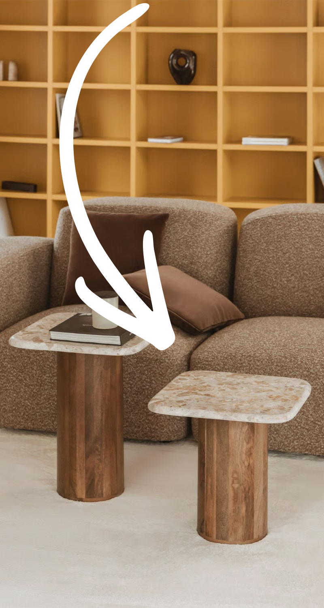
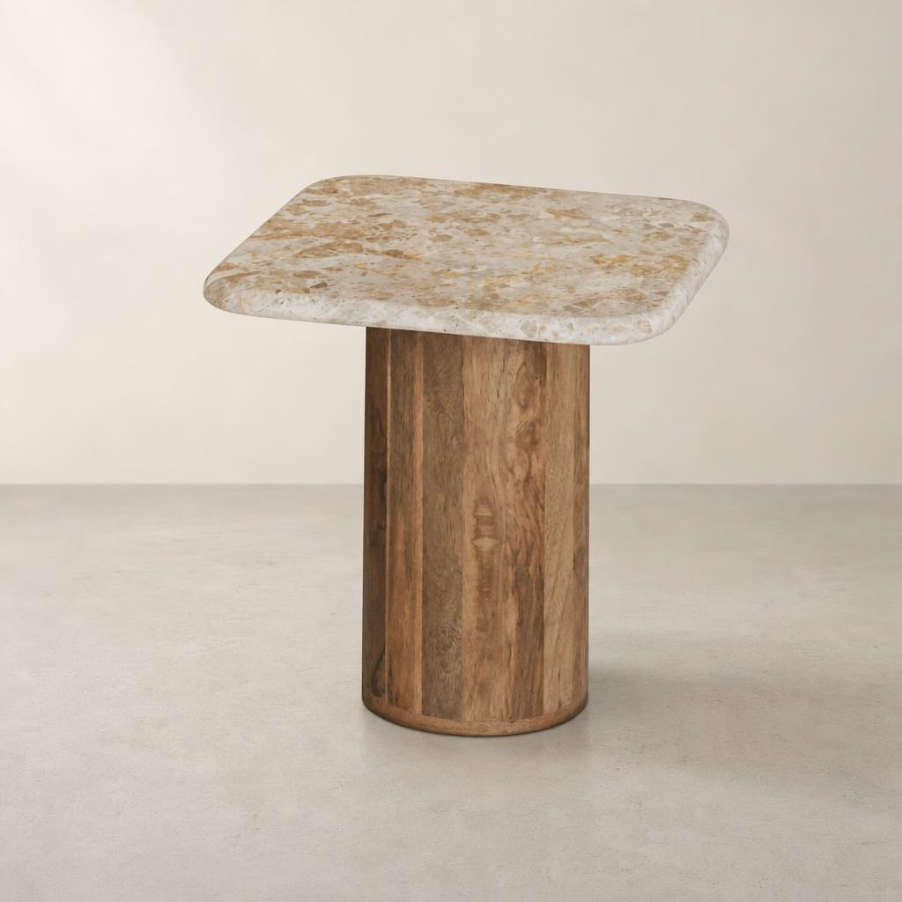
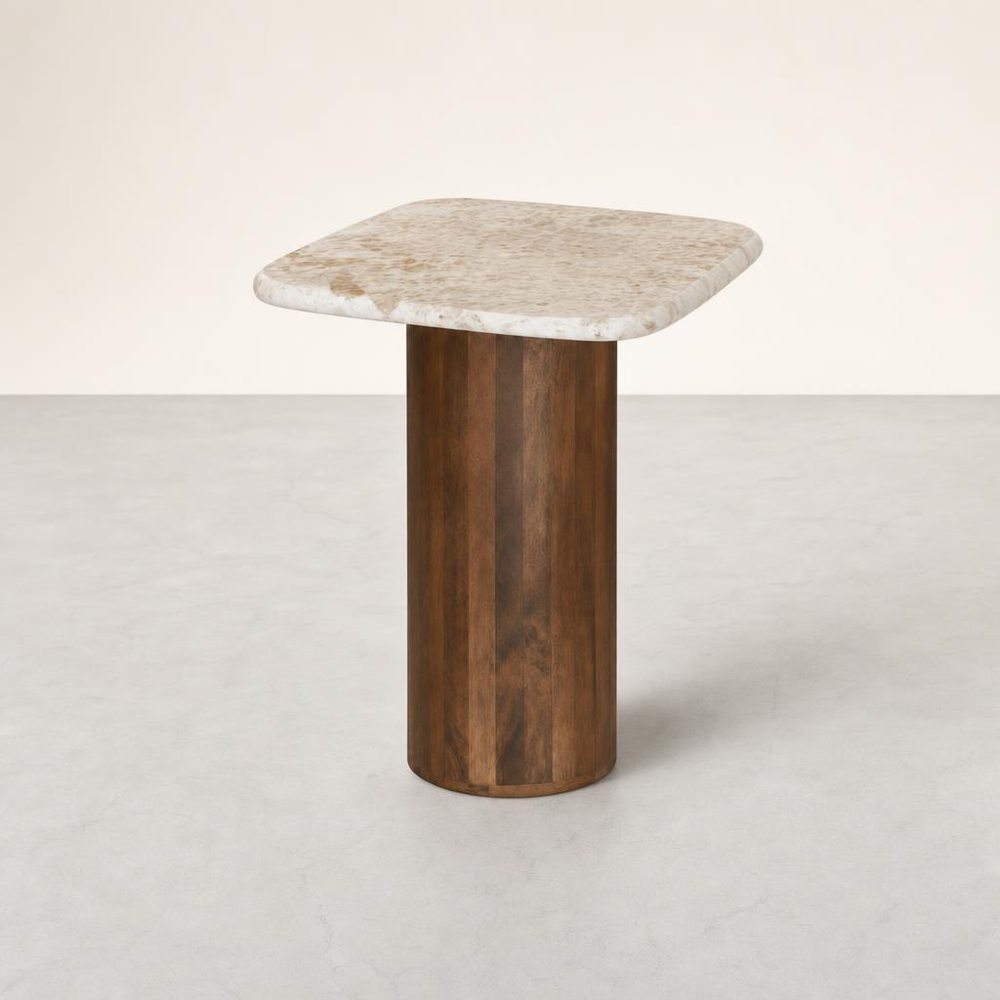
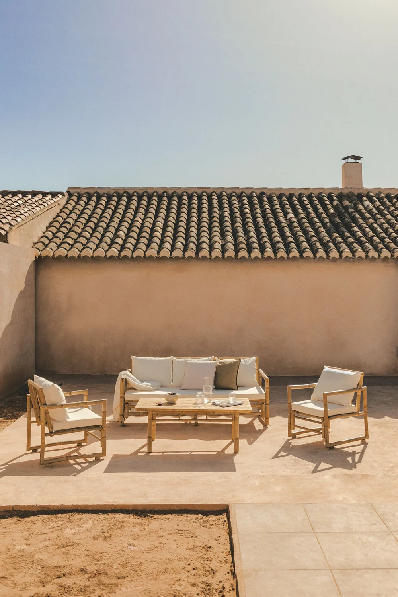
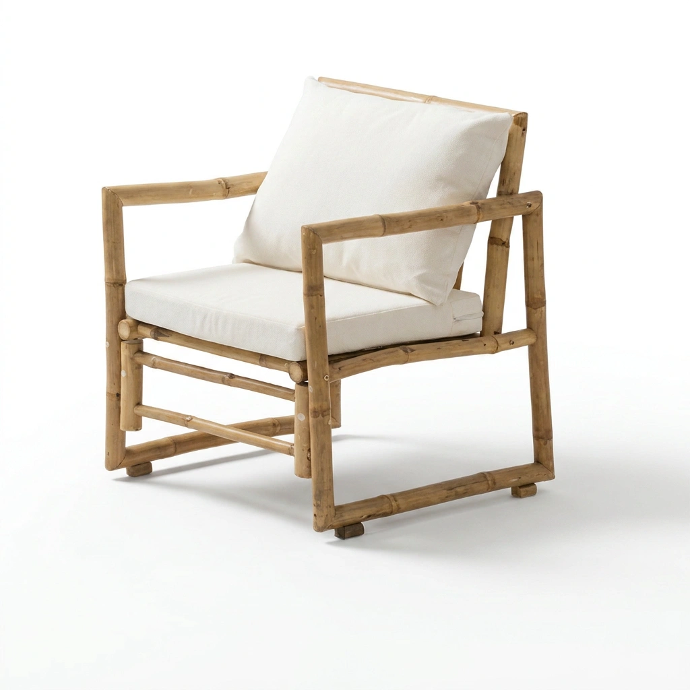
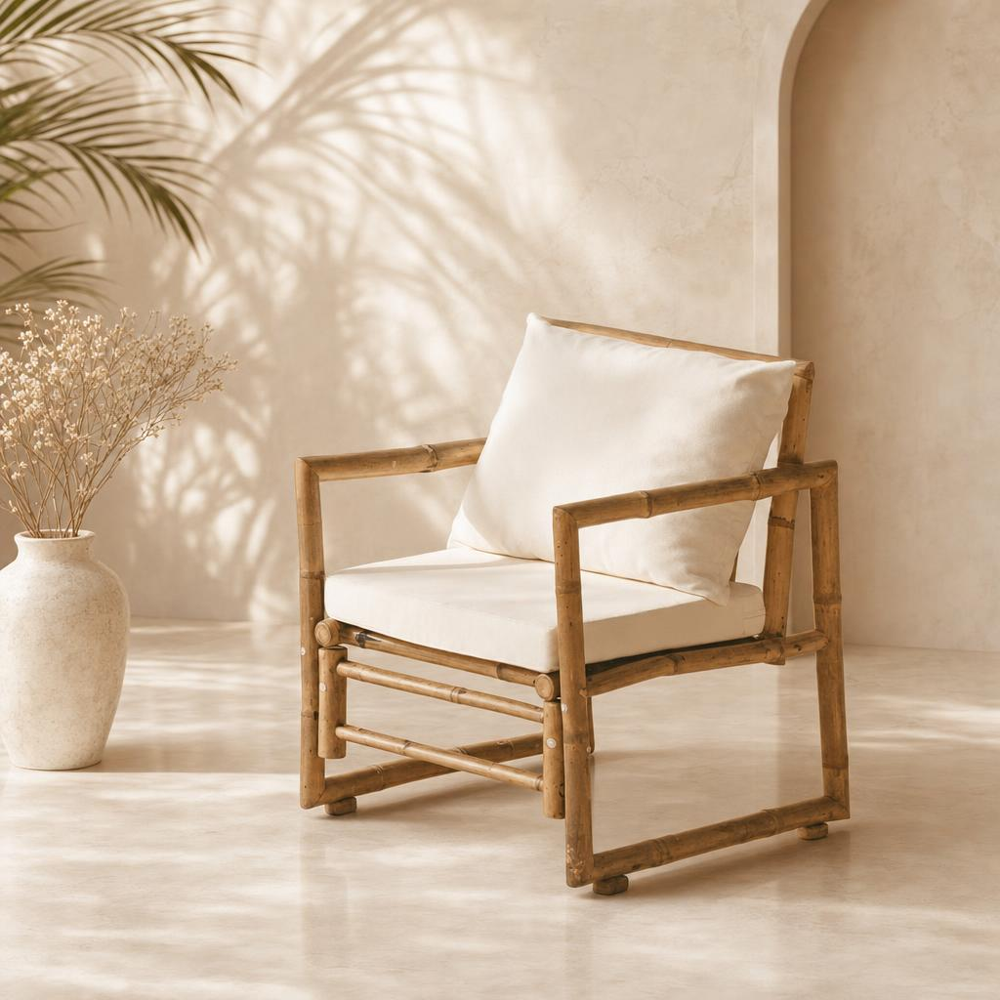
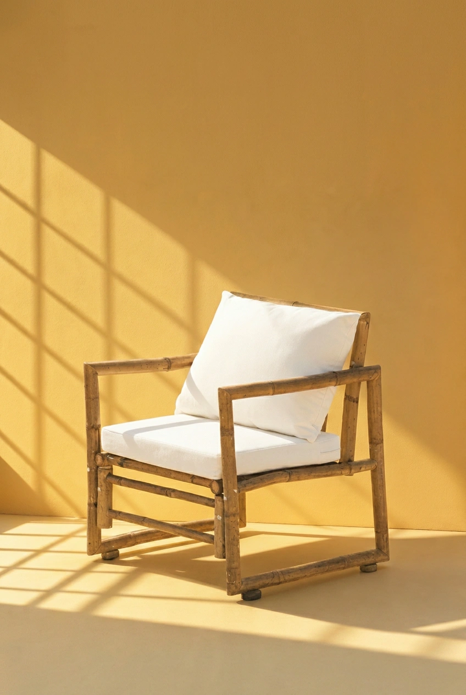
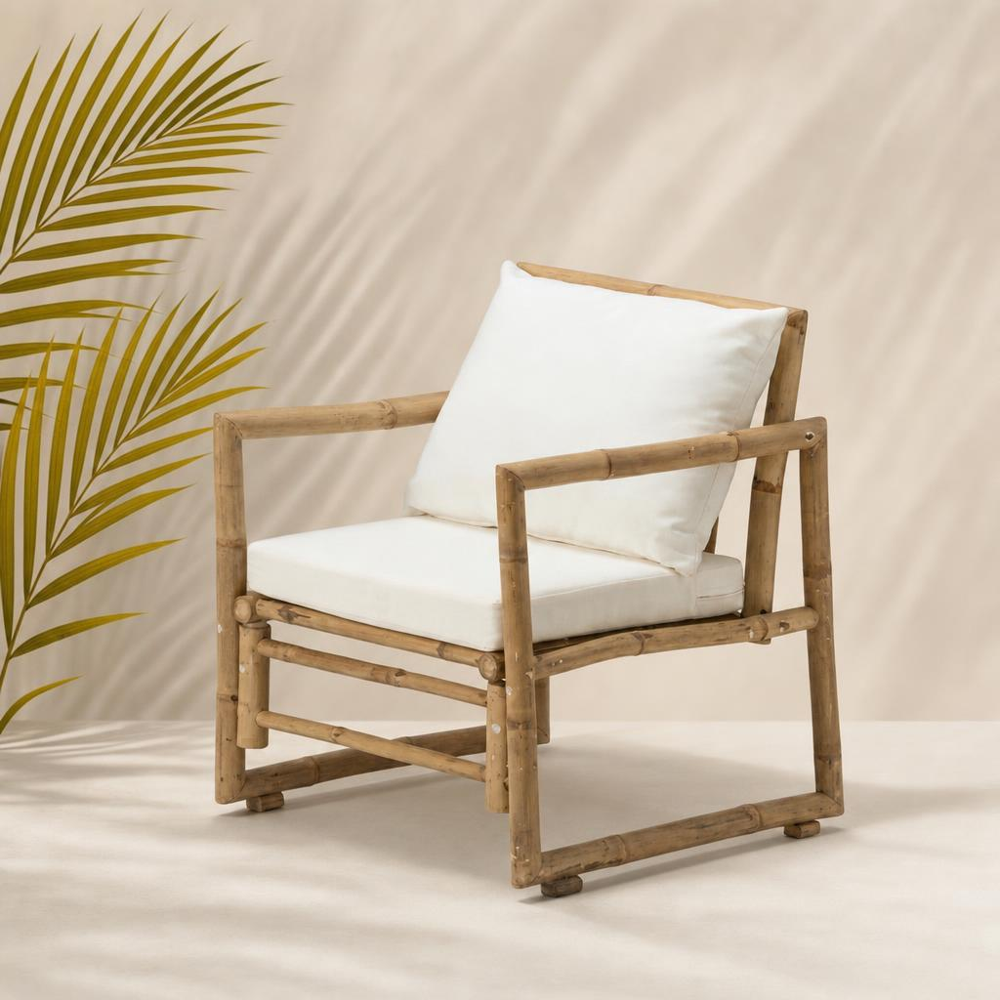

1-click
Open in Replit
Each Runflow template wraps a focused AI pipeline (product cutout, smart-resize, brand pack, headshot) in a forkable, browser-only UI. Bring your Runflow key, pay per call, ship on your own infra.



One model that promises to do everything will frustrate you the moment you try to use it for one specific job. Runflow templates wrap a chain of specialist models around the exact task you're doing.
Every template is a Replit-importable repo with a working UI and a working pipeline. Open it, paste two keys, you are live.

Input





One supplier photo → seven store-ready assets. Cutout, white studio, three lifestyle scenes, 9:16 hero, 1:1 ad. Built for AliExpress, 1688, and Alibaba rebrands.
One ad creative, every platform aspect ratio + every locale. Smart reframe preserves the subject through 1:1, 9:16, 4:5, 16:9; translator swaps the headline copy per market without re-rendering the visual.
One product photo → eight angles for Amazon, Shopify, and Shop ads. Front, three-quarter, top-down, side, lifestyle pairings, all consistent.
Static ad creative → 6-second motion ad with subtle parallax, text reveal, and product-spin. Drop your hero image, get a TikTok-ready MP4.